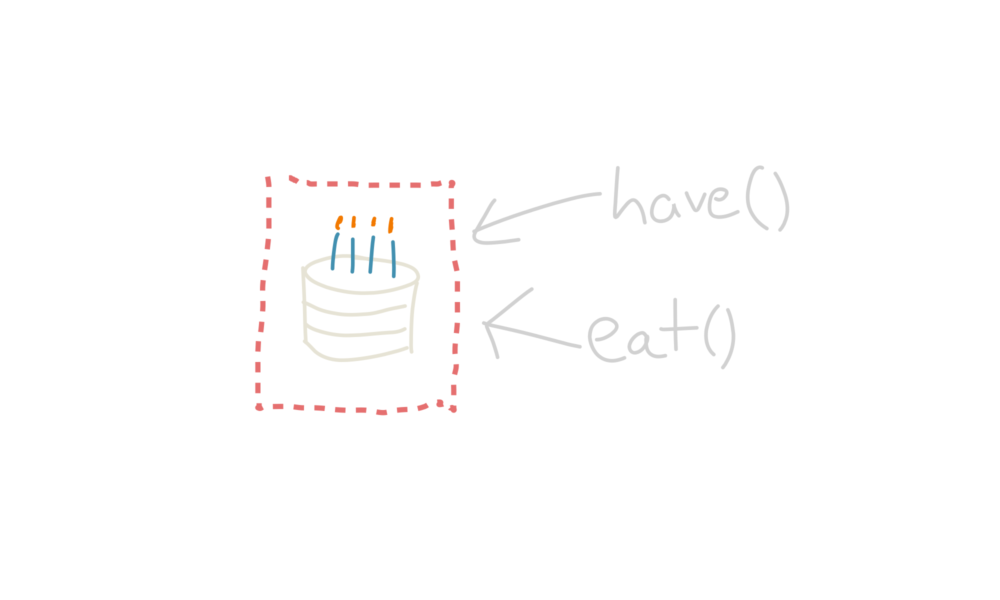
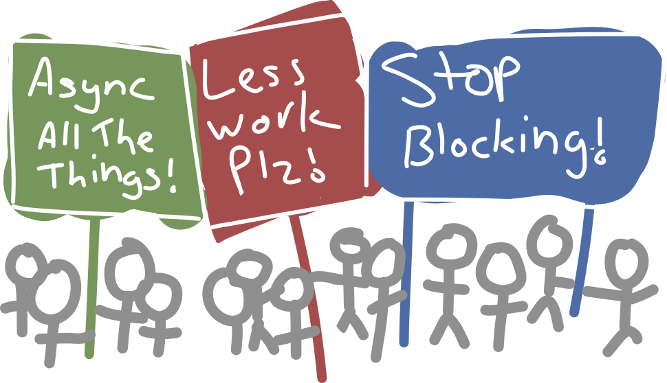
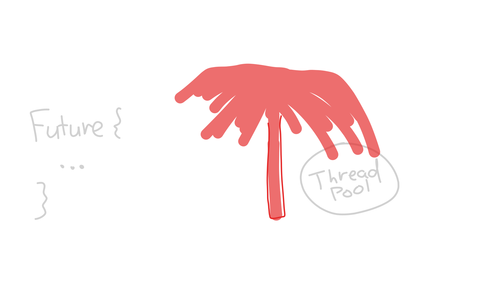

# Sequential State _a.k.a. race-free, asynchronous `have()` and `eat()` <br>operations on shared mutable cake._  Tim Cuthbertson (<a>@timbertson</a>). <strong>Press "p" for speaker notes.</strong> ??? Hello, I'm Tim and I'd like to talk to you about concurrency. I've done a lot of **work on concurrency in Javascript** in the past, and I currently work on some **interesting scala stuff at zendesk**. I haven't used akka extensively but recently I've been digging into it, trying it out and thinking a lot about it. I'm a big believer in **picking your abstractions intentionally**, and not just going with what you're given. So I found that akka was a bit too opinionated for me, and yet **traditional parallel programming** is still so manual and error-prone, even with modern conveniences like thread pools and futures. So I wanted to see if there was some kernel in what akka provides that I could maybe **extract or recreate**, and maybe that would provide a good middleground between normal programming and actor programming. And I think that led to something interesting which I'd like to share with you. --- # Step 0: No Concurrency  ??? OK, so you have a program that does stuff. It takes some input, maybe it's receiving HTTP requests, maybe it's reading some event stream, whatever. And let's say you do two things to each message, A and B. Maybe A is grabbing stuff from a database, and B is rendering some HTML or sending emails or something. **First, you do that synchronously**. Input arrives on A, then you send it to B, and then you send it to the output. This works, and it's super simple. It's **how rails and every other single threaded framework does things**, but it can lead to low utilization and slow response times. --- # Synchronous, blocking queues  ??? So if you want to improve on that, you might **add some threads**. You give a thread to A, another one to B, and you give them both queues so that they can buffer up work to do. **Input goes onto A's queue**, and one A has done its thing it puts something on B's queue, and once B is done it can go to the output. This gives much better throughput - you can now utilize two CPUs in parallel, and queue up a bit of work so that **both A and B have a constant stream of things to do**, without needing to wait for each other. And generally you'll want to use a **bounded queue here**, which provides a natural limit on capacity - if B gets overwhelmed, A will be blocked trying to add to B's queue until some space frees up. Eventually that'll show down A so much that _it's_ queue fills up, and that eventually slows down the rate at which you can accept new input. And this is **generally referred to as backpressure**. When a component is at capacity, it pushes back on the rest of the system to ensure that **the system as a whole doesn't take in more work than it can handle**. I should clarify, this approach requires that **A and B are totally independent**, and they just pass things to each other via these queues. If you have some **mutable state that's shared** between both A and B, you need to fix that first. --- # Scaling up the number of components <br/> <br/>  <center> <br> (we're gonna need more threads!) </center> ??? So that's fine when you have two things to do, but what happens when you have **much more fine-grained pieces of work?** If you scale up the previous solution, you end up with **one thread per component**. But threads are expensive, you don't really want 50 of them, let alone hundreds. Actors take this model, but **decouple the components from threads**. Each component still has a **queue of things to process which it calls a mailbox**, but it can efficiently schedule thousands of actors on a handful of threads. Actors do this by **forcing each actor to encapsulate its own state**, just as we were doing here. And actors can only interact by sending each other messages. --- # Actors have queues  ??? Sending a message is really just **putting that message on the receiving actor's queue**, and at some point that actor will get scheduled onto a thread and process that message. Because **message sends are always asynchronous**, actors won't block up a thread waiting for replies. And that's how you can share a handful of threads between hundreds of actors, because **they only need the thread when they have a new message to process**. Going back to this two-component example, we **no longer need a thread per component**, and we've still got a queue between components to achieve good throughput. The problem is the nature of these queues. --- # Actors have infinite queues  ??? They're actually infinite. Which is fine if your **input doesn't exceed your ability to process it** - maybe a burst of traffic here and there might cause a memory spike. But this system is going to fall over under sustained load. --- # Actors have INFINITE queues  ??? Because if you get into a sustained situation where **A can handle events quicker than B**, then B's queue is eventually going to **monopolize your memory**, and you'll either spend **all your time in garbage collection** or you'll flat out **crash because you have no memory**. This happens occasionally with HTTP services, but only under sustained load. But **it can happen very easily if you're dealing with a batch or streaming process**, which may have often have more work than it can handle. It's your job to accept work at a rate that you can sustain. --- # Actors need backpressure protocols  ??? And so actors can end up needing this **bidirectional, pull-based model**. This might work by B sending A a messsage, saying "hey I've got some capacity, send me up to 10 messages". And A remembers that, and **accepts up to 10 things to process from the input**. After it's sent a handful, **B has completed a couple of them**, so it sends another message saying "actually I can handle 2 more messages". So A can now **grab another 2 inputs**, and stop when it's sent a **total of 12** to B. There are other ways of doing this, but the key point is that it **has to be implemented as a protocol on top of actors** - you can't get it for free, because it needs to know the **topology of how work flows through the system**. --- # Akka streams tl;dr use it (or Monix / another reactive streams implementation) if your problem fits. ??? Well, sometimes you _can_ get it for free. **Akka streams is precisely an abstraction for these sorts of pipelines**. It's built on akka, but you just interact with **a high level DSL** which defines pipelines, not individual actors. One of the main motivations for akka streams and other reactive streams implementations is to deal with **backpressure**. ---- -- But if it doesn't... <br/>  ??? If your problem fits akka streams, you should probably use that or any other implementation of reactive streams, like Monix. For example if your process is a **defined set of stages** that data flows through, then that would be a good fit. I won't go into what problems suit akka streams, because **that's a whole different talk**. But let's assume that your code doesn't happen to fit in the akka streams model. What do you do then? The obvious answer is to **use plain akka**. --- # Enter Actors (stage left) Specifically the akka kind. What are they about? - nonblocking - cheap (have thousands, it's fine) - concurrent - sequential (no actor is ever doing two things at once) ??? So let's review the **features of akka actors**. They're **nonblocking, and cheap**. That means you can have thousands of them, and still schedule them efficiently on a handful of threads. They're **concurrent**, in that you can run many actors at the same time. But they avoid a lot of concurrency issues since **each individual actor owns its own state**, and is never doing two things at the same time. For state inside actor, you **never have to worry about race conditions**, which massively reduces the number of errors you can make. --- # ... but also: - network transparency (remote actors) - actor paths, supervision hierarchy ### These could be neat! (I haven't used them much myself) ??? But akka actors combine a lot of **semi-related abstractions**. Sending a message to a remote actor on another system is super cool, but I've never actually had a good use for that myself so I can't say I really need it. The whole business around **supervision hierarchies** is interesting, but that's not necessarily the structure I'd choose to manage failure handling. --- # ... but also: - network transparency (remote actors) - actor paths, supervision hierarchy ### The One True API ```scala trait Thespian { def doSomethingMaybe(message: Any): Future[Any] } ``` ??? And If I told you that all your components should just implement this trait and nothing else, **I'm pretty sure that wouldn't catch on**. And yet, that's basically the only interface that akka lets you use. **When you're dealing with dynamic messages and remote actors**, I can see why this is necessary. But I'm not doing that most of the time. I'm a big fan of a **powerful type system**, and scala's is pretty decent. typed akka is interesting, but still experimental and somewhat complex. Oh and although you can **always receive a future** which waits for a reply from a given message, most of the time you'll **never actually get a reply**, so have fun with that. --- # ... but also: - network transparency (remote actors) - actor paths, supervision hierarchy - actors are untyped ### Actors are infectious (or maybe elitist -- they only talk to other actors) ??? Actors are also **infectious**. If you want to talk to an actor and receive a response, you need to also be an actor. Technically you can talk to an actor from regular code, but guess what that does? It goes and creates a **temporary actor** behind the scenes which will **funnel** the response back to you. There are a number of interfaces which are infectious like this, **futures** is one of them. If you call something that returns a future, you'll **likely need to return a future yourself**. But I'm fine with that, because futures represent a **very specific abstraction**. Actors on the other hand are about **6 things in 1**, so it's a lot more to ask. --- # ... but also: - network transparency (remote actors) - actor paths, supervision hierarchy - actors are untyped - actors are infectious, opinionated ### Unreliable narrators "send a message", they say. "It'll _probably_ arrive!" ??? And finally, there's no feedback for message delivery. If you send a **local message**, I'm pretty sure it never gets dropped in practice. But since the recipient **can't affect how or when you send messages**, you have to implement backpressure as an **explicit protocol** on top of actors. --- # ... but also: - network transparency (remote actors) - actor paths, supervision hierarchy - actors are untyped - actors are infectious, opinionated - message delivery has no feedback ??? So.. yeah. Actors have **some good things** going for them, but they also have a **lot of other things** along for the ride. Some of which I would never ask for, if given the choice. --- # I... kinda miss threads?  ??? And, going back to the problem at hand. **I kinda miss threads**. It didn't scale up because it requires a thread per component, but it had some **nice properties** when done right. You can just throw stuff at other components, and they'll block you if their queue is full. What if we had the **best of both worlds**? --- # Best of both worlds - sequential state encapsulation - builtin backpressure - no blocking  ??? Actors have really good **state encapsulation**. Since they're only ever doing one thing, you own the state and can do what you like with it. And bounded queues give you **backpressure for free**. But they use blocking. But **me and these stick figures**, we want all that good stuff in one neat package. And if you know me you'll know that I'm **not one for letting down stick figures of my own imagination**, so.... --- # Introducing `SequentialState` ### Minimum Viable Abstraction: - sequential: it's only ever doing one thing - it's just state (get / set / mutate) - does one thing well - nonblocking, wait-free queue for operations - distinction between "queued" and "done" (backpressure!) ??? I made a thing, it's called a SequentialState. It's so simple it **didn't even need a clever name**. (or else I'm bad at clever names). **It's sequential**. Like an actor, it will never be doing two things at once. But it's **just data**. There's **no code, no agency**. The API only lets you **set, get and mutate state**. This is not a framework for building APIs, this is just a class for encapsulating state. It's **nonblocking and wait-free**. All waiting happens via futures, so it will never tie up a thread waiting for some space on a queue. And it **gives you feedback** - you can observe both when an action is **accepted**, and when it is **complete**. --- # The entire(*) API: <small>(*) that's a lie, but bear with me</small> ```scala // ref trait Ref[T] { def get: T def set(newVal: T): Unit } SequentialState[T](initialValue: T, bufLen: Int) { def mutate[R](fn: Ref[T] => R): Future[Future[R]] } ``` ??? And.. here's the API. This is a lie, there are a **bunch of convenience methods** on top of this. But this `mutate` is the **core and most powerful** operation, everything else just wraps it. You can make a state, and you give it an **initial value** and a **maximum queue size**. I didn't show it here but there's also an **implicit ExecutionContext** you need to provide at construction, which is where operations will run. Internally your state is **wrapped in a ref**, which is just a way to get and set the underlying state. You usually won't need to deal with this wrapper explicitly. To mutate state, you pass it a function which does something to your state ref, and then returns whatever type you like. All mutate does is run that function on your ref, and return its result to you. But **instead of running that function immediately**, the return value is a **future of a future** of the actual result. --- # Your future is weird ```scala mutate( ... ): Future[Future[R]] ``` ### ??? *audience sniggers* ??? You may be thinking that I need to be **taught a lesson in flatMap**, because a future of a future is just silly. But it's intentional, it allows us to capture both the **enqueueing** and the **completion** of an operation --- # Your future is weird ```scala def mutate( ... ): Future[Future[R]] = ??? mutate( ... ) // the message has been sent .foreach { future => // the message has been accepted by the receiver future.foreach { result => // finally, a T! } } ``` ??? For backpressure, it's important for the **receiver to be able to slow you down**. Here it can do that because the outer future completes when the receiver **allows the operation** into its bounded queue. Once that outer future is done, you can go ahead and **submit more work**, knowing you won't overload the receiver. Meanwhile the inner future tracks the **actual completion of the submitted task**, if you need that. In practice, most operations are either **enqueue or await** - either I want to send some piece of work and wait for just the outer future, or I want to perform some action and not continue until I have the result. So there are a **bunch of convenience functions** for both of those, but they're all built around this nested future. --- # Less lies: ```scala // mutate mutate[R](fn: (Ref[T] => R)): StagedFuture[R] trait StagedFuture[T] extends Future[T] { def accepted: Future[Future[T]] } ``` ??? I **lied again earlier** when I said that `mutate` returns a Future of a Future. This was true of the initial implementation, but these days it returns a **StagedFuture**. It still represents the same concept of a nested future, except that by default it works just like **a flat future**, you have to explicitly use the `accepted` property if you want to get at that nested version. --- # Convenience wrappers for `mutate` ```scala class SequentialState[T]( ... ) { // mutate def mutate[R](fn: Ref[T] => R): StagedFuture[R] // apply a pure transformation to the state def transform(fn: T => T): StagedFuture[T] // enqueue a transform operation but don't wait for its result def sendTransform(fn: T => T): Future[Unit] // access the state (useful when T is itself mutable) def access[R](fn: T => R): Future[R] // return the current value without modifying it def current: Future[T] // ( ... and a few others) } ``` ??? And here's a couple of the convenience wrappers I mentioned. You can achieve everything you want with **`mutate`**, but these helpers give you convenient shortcuts for **common patterns**. **Transform** lets you use a function which takes in the current state and returns the new state, which is basically `map`. There's also **sendTransform**, which is like a fire-and-forget transform. The only thing you can do is wait for the operation to be accepted, which helps to clarify intent. Then we have **access**, which runs a function with the current state. This is useful if your state type is mutable - you have **exclusive ownership** of your state inside your function to **mutate** it, without needing the Ref wrapper. And finally there's **current**, which just gets the state but doesn't allow you to modify it in any way. There are some **more permutations**, but this gives you a good idea. --- # Example: word count (Akka) ```scala class WordCounter extends Actor { import WordCounter._ private var i = 0 def receive = { case Add(line) => i += line.split("\\s+").length case Get => sender ! i } } object WordCounter { case object Get case class Add(line: String) } ``` ??? So here's a **simple word counter** actor in akka. You send it a **line at a time**, and it keeps an **internal count** of the words it's seen so far. You can tell it to **add a line**, or you can tell it to get the **current count**, which it gives to you in a **reply message**. And it's got some things I dislike. It's **akka-centric**, so it's not an object with methods it's an actor which you can send messages. And those messages are **untyped**, so even though we've got these specific case classes in a companion object, it's all just **convention** and the compiler can't tell you if you send this actor dumb things. ---- -- ```scala def run(lines: Iterable[String])(implicit system: ActorSystem) = { val counter = system.actorOf(Props[WordCounter]) // wat lines.foreach { line => wordCounter.add(line) } implicit val duration: Timeout = 5 seconds // yuck (counter ? WordCounter.Get).mapTo[Int] // yuck } ``` ??? And this is how you use it from non-actor code. You can't just instantiate one, you need to ask the actor system to **make one for you**. And in order to get a response from it you need to tell akka how long it should **keep alive the temporary actor** it's going to make for you to receive that response, and then when you do get a response you have to **cast it back to an int**. Some of akka is great, but the problem is you get all of this stuff you **didn't necessarily** want getting in the way. --- # Example: word count (SequentialState) ```scala class WordCounter() { private val state = SequentialState(0) def add(line: String): Future[Unit] = state.sendTransform(_ + line.split("\\s+").length) def get: Future[Int] = state.current } ``` ??? Meanwhile, here's a SequentialState version which is just a **plain object**. Its state is private, all you can tell as a user is that it has **two methods, `add` and `get`**. Both of them return futures. You can add more methods which don't use the state, I don't care. **`add`** is side effecting, so the future will return as soon as the **operation is enqueued**. That way you can efficiently queue work but not **overload the receiver**. The **`get`** on the other hand actually returns the result, so that won't resolve until the operation has fully finished. ---- -- ```scala def run(lines: Iterator[String]) = { val counter = new WordCounter() def loop(): Future[Int] = { if (lines.hasNext) { counter.add(lines.next).flatMap(_ => loop()) } else { counter.get() } } loop() } ``` ??? And this is how you use it. There is some awkward code with the **recursive `loop` method** there, because you need to wait for a future before continuing the next iteration. But that's only simpler in the akka example because that example is **missing backpressure**. It just runs as fast as it can, and **hopes** the system can keep up. This version only consumes new lines when the **word counter is ready** to accept them. --- # Time to put the "eh?" in asynchronous ??? So that covers a simple case where the action is synchronous - we were just adding up numbers. But how does this work when you have an action which is asynchronous? ---- -- ```scala val cache = SequentialState( mutable.Map[String, Future[HttpResponse]]() ) def fetchWithCache(url: String) = { cache.access { cache => cache.get(url) match { case Some(future) => future case None => { val result = Future { fetch(url) } cache.update(url, result) result } } } } ``` ??? Consider this code. It fetches HTTP resources, but it keeps a cache in front. Since we're using a SequentialState to cache one future per URL, any **concurrent attempts** to access the cache will happen **sequentially**, and we'll only create a new async request when there isn't one in the cache. So the main body uses **accesses** to use the cache, which is all we need because we're going to **mutate it directly**. We look for the given URL. If it's a Some, we just return that value. If it's a None, we make a future to **fetch the resource**, store that in the map, and then return it. So if another request comes along it'll use the same result, even if the future hasn't completed yet. _ -- pause a bit --_ That looks... good, I think? Seems reasonable? But something's **not quite right**. Thinking about the signatures, what we actually have is: --- # That fetch function: ```scala def fetchWithCache(String): StagedFuture[ Future[HttpResponse] ] ``` ??? This. Since the function using the cache map returns a **Future of a response**, you end up with the overall function returning a **StagedFuture** of a Future of a response. Which is kind of **familiar**, remember I said the staged future concept was essentially a nested future for dealing with **backpressure**? ---- -- ```scala fetchWithCache(url).flatMap(identity) : Future[HttpResponse] ``` ??? So you might think that it's sufficient to just **join those** into one future like so. Then you get a **plain Future** of an **HttpResponse**. And that **_does_ handle backpressure**, in one specific way: the cache will not get overloaded **generating** Future objects. ---- -- The code which won't get overloaded: ```scala Future { fetch(url) } ``` ??? This is the code we're executing **synchronously**. But all this code is doing is **enqueueing a task** in the implicit execution context, and returning a Future to track its completion. Most of the time, it's just enqueueing an operation onto a thread pool's **infinite queue**. --- # It's our old friend, the infinite queue ### (of doom)  ??? So this code really just generates futures, and that's extremely quick. We haven't really dealt with **backpressure properly**, since we're still queueing up tasks in **this queue** without regard to whether the **system can keep up**. So there's one more piece to this puzzle: --- # OK so there's a few more API functions ```scala SequentialState[T](initialValue: T, bufLen: Int) { def mutate[R](fn: Ref[T] => R): StagedFuture[R] * def mutateAsync[R](fn: Ref[T] => Future[R]): StagedFuture[R] // ( etc ... ) } ``` ??? There is actually an **async version** of most of the API methods I've shown on SequentialState, for when the function you pass **returns a future** instead of a synchronous result. Practically, the **core sequential execution** is still the same. You still get exclusive access to the state for the **synchronous part** of the function. Once your function has returned a future, you **lose** that exclusive access. Which means we can **still move on** and execute the next queued function with our state. The **difference** in the async variant is that we **keep the result around**, and it continues to take up a slot until the future is completed. --- # Async queue illustration  ??? So let's say you've got a state object with a couple of queued operations. The **yellow one** was added first, and we're currently executing it. --- # Async queue illustration  ??? But it's actually an async task, so it **takes up a slot** even after it completes. We can still move onto the next task to execute, but we've got **less spare capacity**. --- # Async queue illustration  ??? And maybe that async task finishes too, but **neither future** is complete. --- # Async queue illustration  ??? If the async tasks take a while, you'll end up with your **entire capacity** being taken up by pending futures. At which point you **wouldn't accept any more tasks** until one or more of these futures is complete. Which is exactly what you want - if your asynchronous tasks haven't completed yet, you want to hold off accepting new tasks so that you **apply backpressure** to whoever's giving you more work. It's kind of neat, actually - the **core executor** doesn't care whether your function is async or not, it just affects when the **queue** considers its slot to be freed. --- # In conclusion Akka: - good for some things, but lots of baggage - some of that is unnecessary, some actively bad for certain uses SequentialState: - simple code, minimal abstraction - type-safe - backpressure included - including for async tasks! - fast _enough\*_ - not at all battle tested - (turns out my work project suited akka-streams/monix quite well) - did I reinvent a wheel? I couldn't find one... ??? So.. **in conclusion**. Thanks for hanging in there. I'm not saying that **actors are always bad**, but it's a **big abstraction** to buy into, and I doubt that most people actually want all of those abstractions all the time. And **personally**, I find some of their limitations to be **quite unpleasant**, like the complete lack of types. I **compare** SequentialState to akka because I might **use them for similar things**, and that's what people are familiar with. But it's a **different, and much smaller**, library. Personally it encapsulates **everything I want** from actors, but your mileage may vary. The big benefits of SequentialState over akka are that it's **minimal** and **type safe**. And it was built to handle **backpressure** automatically, which I think is kind of a **big deal**. I did some **rudimentary benchmarks**, and in terms of raw overhead it ranges between about **5% faster** and about **20% slower** than akka in most cases. So it is **slower on average**, and also its performance is **slightly more variable**. For me, that's fast enough. Note that this is for raw messaging overhead -- the more **useful work** you do, the less that overhead matters. Fundamentally this whole thing is just a **specialized task queue**, so that's what dominates performance. So that's where I've had most of the fun learning how to make it fast. I even read **papers on concurrent queues**, which is not something I've done before. I also haven't **used this in anger** yet. It's an idea I came up with when I **looked hard at akka** for a project, and didn't really like what I saw. But it **turns out** that reactive streams is a decent enough fit, so I haven't actually used this for **anything substantial** yet. Also I kinda feel like **surely** I must have **reinvented a wheel**, but I looked, and I couldn't find any other systems which give you these the same features. So please **yell out** if you know of any. And even if it isn't something you **want to use**, hopefully this talk **encouraged you to think a bit about concurrency**, because I think it's a fascinating topic. I doubt there's ever going to be **one right tool** for efficient concurrency all situations, so it's worth thinking about where **different tools** have their **strengths**. --- <br> <br> <br> <br> # Queue & A ... https://github.com/timbertson/sequential-state (thanks for your time, I've been <a>@timbertson</a>) ??? Anyway, if you're interested, please **check it out**. Thanks for listening!